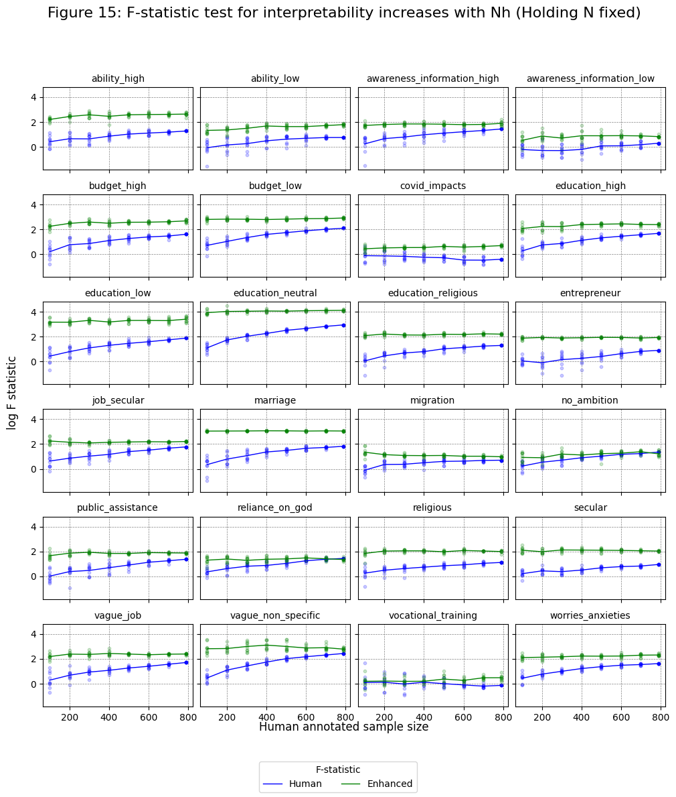

Interpretability increases with Nh#
Imports#
import os
import pandas as pd
from iqual import tests
Load datasets#
data_dir = "../../data/"
### Enhanced qualitative data
bootstrap_df = pd.read_csv(os.path.join(data_dir,"enhanced_bootstrap_kfold.csv"))
### Quantitative data
quant_df = pd.read_csv(os.path.join(data_dir,"quant_data.csv"))
Variables#
annotation_vars = [
"ability_high",
"ability_low",
"awareness_information_high",
"awareness_information_low",
"budget_high",
"budget_low",
"covid_impacts",
"education_high",
"education_low",
"education_neutral",
"education_religious",
"entrepreneur",
"job_secular",
"marriage",
"migration",
"no_ambition",
"public_assistance",
"reliance_on_god",
"religious",
"secular",
"vague_job",
"vague_non_specific",
"vocational_training",
"worries_anxieties",
]
id_vars = ['uid','data_round','refugee','bootstrap_run','train_sample_size']
Human Annotated Data (Merged with quantiative data)#
human_df = bootstrap_df.loc[bootstrap_df.split=='train',[*id_vars,*annotation_vars]].copy()
human_df = human_df.rename(columns={c+"_act":c for c in annotation_vars}).drop_duplicates()
human_df = pd.merge(human_df,quant_df,on=['uid','data_round','refugee'],how='left')
Enhanced Dataframe (Merged with quantiative data)#
enhanced_df = bootstrap_df[[*id_vars,*annotation_vars]].copy()
enhanced_df = pd.merge(enhanced_df,quant_df,on=['uid','data_round','refugee'],how='left')
Interpretability tests on Human Data#
# Numerical regressors
numerical_vars = [
'refugee','hh_head_sex','eld_sex','parent_reledu','data_round',
'num_child',
'hh_head_age',
'parent_eduyears',
'eld_age',
'hh_asset_index',
'hh_income',
'int_trauma_exp',
]
Human#
human_int_dfs = []
for (train_size, bootstrap_run), df_human in human_df.groupby(['train_sample_size','bootstrap_run']):
interpreter = tests.Interpretability(df_human,
annotation_vars=annotation_vars,
numerical_regressors=numerical_vars,
).fit_all()
human_interp_df = interpreter.get_results()
human_interp_df['train_size'] = train_size
human_interp_df['bootstrap_run'] = bootstrap_run
human_int_dfs.append(human_interp_df)
human_interp_data = pd.concat(human_int_dfs,axis=0)
Enhanced#
enhanced_int_dfs = []
for (train_size, bootstrap_run), df_enh in bootstrap_df.groupby(['train_sample_size','bootstrap_run']):
interpreter = tests.Interpretability(df_enh,
annotation_vars=annotation_vars,
numerical_regressors=numerical_vars,
).fit_all()
enhanced_interp_df = interpreter.get_results()
enhanced_interp_df['train_size'] = train_size
enhanced_interp_df['bootstrap_run'] = bootstrap_run
enhanced_int_dfs.append(enhanced_interp_df)
enhanced_interp_data = pd.concat(enhanced_int_dfs,axis=0)
F-statistic test for interpretability increases with Nh (holding N fixed)#
import matplotlib.pyplot as plt
nrows, ncols = 6, 4
fig, axes = plt.subplots(nrows=nrows, ncols=ncols, figsize=(12,12),
sharex=True, sharey=True,
)
axes_flat = axes.ravel()
for a, annotation_var in enumerate(annotation_vars):
ax = axes_flat[a]
human_x = human_interp_data.loc[human_interp_data['annotation']==annotation_var,'train_size'].values
human_y = human_interp_data.loc[human_interp_data['annotation']==annotation_var,'log_fstat'].values
enh_x = enhanced_interp_data.loc[enhanced_interp_data['annotation']==annotation_var,'train_size'].values
enh_y = enhanced_interp_data.loc[enhanced_interp_data['annotation']==annotation_var,'log_fstat'].values
# Scatter plots
ax.scatter(human_x,human_y, marker="o", color='blue', s=10, alpha=0.2,)
ax.scatter(enh_x, enh_y, marker="o", color='green', s=10, alpha=0.2, )
# Mean plots
human_mean = human_interp_data.loc[human_interp_data['annotation']==annotation_var].groupby('train_size').mean(numeric_only=True)
enh_mean = enhanced_interp_data.loc[enhanced_interp_data['annotation']==annotation_var].groupby('train_size').mean(numeric_only=True)
ax.plot(human_mean.index, human_mean['log_fstat'], color='blue', label='Human', lw=1)
ax.plot(enh_mean.index, enh_mean['log_fstat'], color='green', label='Enhanced', lw=1)
ax.set_title(annotation_var, fontsize=10)
ax.grid(linewidth=0.5, color='gray', linestyle='--')
fig.text(0.5, 0.08, 'Human annotated sample size', ha='center', fontsize=12)
fig.text(0.08, 0.5, 'log F statistic', va='center', rotation='vertical', fontsize=12)
handles, labels = ax.get_legend_handles_labels()
fig.legend(handles, labels,title='F-statistic', loc='lower center', ncol=2)
fig.suptitle("Figure 15: F-statistic test for interpretability increases with Nh (Holding N fixed)", fontsize=16, )
fig.subplots_adjust(hspace=0.3, wspace=0.05, )
plt.show()
